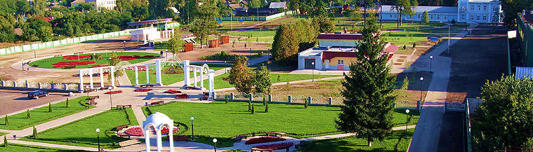

|
История
|
|
 |
 |  |  |
| Мележ Иван Павлович | Метлицкий Николай Михайлович | Марченко Владимир Никитович |
| Белорусский советский прозаик, драматург, публицист. Народный писатель Белорусской ССР (1972). Лауреат Литературной премии им. Я. Коласа (1962). Лауреат Ленинской премии (1972). Лауреат Государственной премии Белорусской ССР им. Я. Коласа (1976). Член Союза Писателей СССР (1945). | Белорусский поэт, переводчик, публицист, журналист. Лауреат Государственной премии Республики Беларусь имени Янки Купалы (1998). Лауреат премии Ленинского комсомола Белорусской ССР (1986). Лауреат Специальной премии Президента Республики Беларусь деятелям культуры и искусства (2013). Член Союза писателей СССР (1981). | Командир расчёта 76-миллиметрового орудия 1054-го стрелкового полка 301-й стрелковой дивизии 5-й ударной армии 1-го Белорусского фронта, старшина. Полный кавалер ордена Славы. |
Автор - Хомякова Марина, учащаяся 11 класса